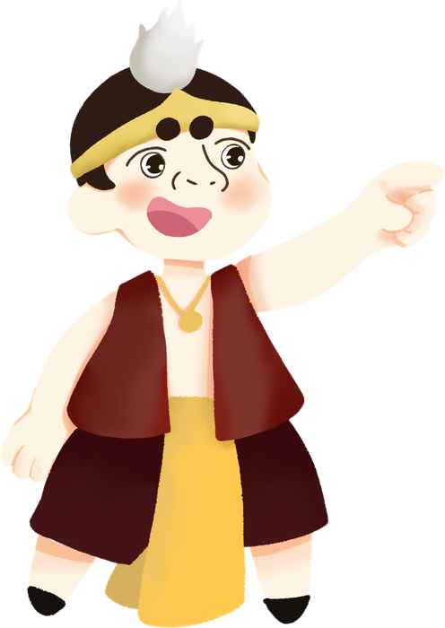
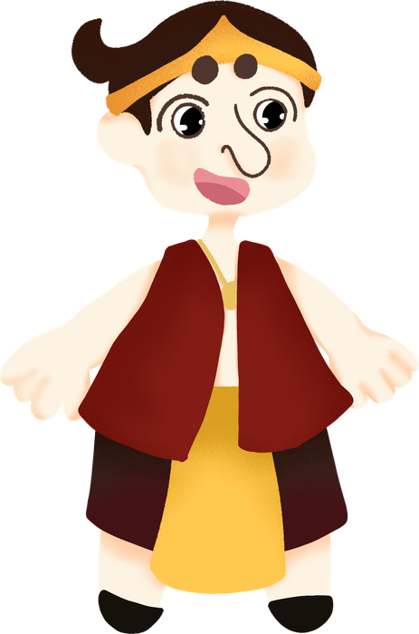
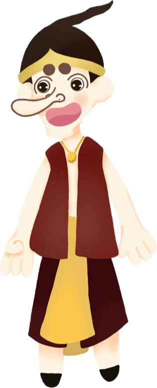
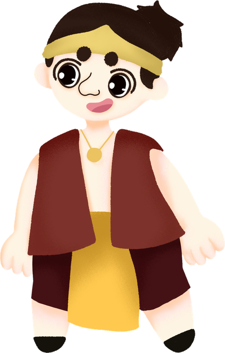

Nglipur Punakawan Virtual Learning Environment
Cultural Storytelling dalam Pembelajaran Matematika untuk Meningkatkan Kemampuan Berpikir Kreatif.




Cultural Storytelling dalam Pembelajaran Matematika untuk Meningkatkan Kemampuan Berpikir Kreatif.



